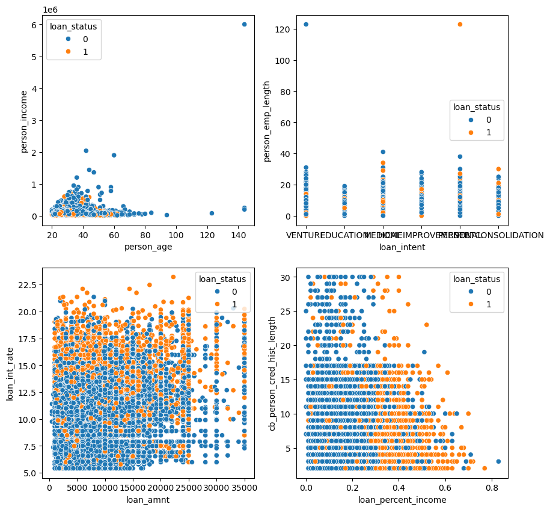
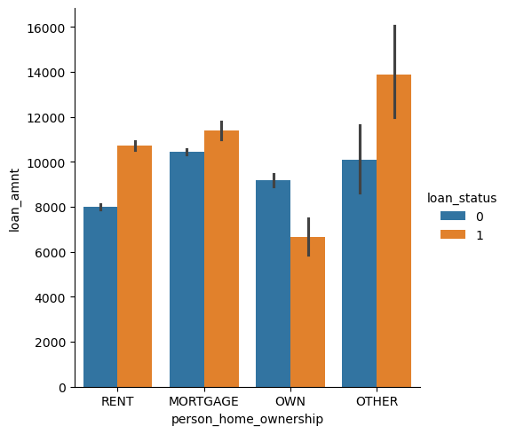

A blog post exploring maximizing score functions for automated descision making algorithms
Author
James Hetherington
Published
March 30, 2024
%load_ext autoreload %autoreload 2
Introduction:
There are two main purposes of this blog post. The first is to explore score maximizing functions and how to choose “optimal” thresholds for a given function. We will do this by exploring trends present in the data, testing different parameters, and error-rates to improve out thresholds. The second purpose of this blog is to uncover and learn how automated decision systems might show bias towards certain sub-segments of a population. By assessing where bias might lie in our models we can better organize our date and parameters to mitigate “unfair” advantages or disadvantages present in the model for certain members of our test population.
Part A:
import pandas as pdimport numpy as npimport warningsfrom matplotlib import pyplot as pltfrom sklearn.linear_model import LogisticRegressionfrom sklearn.svm import SVC # support vector classifierfrom mlxtend.plotting import plot_decision_regions # for visualization laterurl ="https://raw.githubusercontent.com/PhilChodrow/ml-notes/main/data/credit-risk/train.csv"df_train = pd.read_csv(url)
import seaborn as snsfig, ax = plt.subplots(2, 2, figsize = (10, 10))p1 = sns.scatterplot(df_train, x ="person_age", y ="person_income", hue ="loan_status", ax = ax[0,0])p2 = sns.scatterplot(df_train, x ="loan_intent", y ="person_emp_length", hue ="loan_status", ax = ax[0,1])p3 = sns.scatterplot(df_train, x ="loan_amnt", y ="loan_int_rate", hue ="loan_status", ax = ax[1,0])p4 = sns.scatterplot(df_train, x ="loan_percent_income", y ="cb_person_cred_hist_length", hue ="loan_status", ax = ax[1,1])p5 = sns.catplot(data=df_train, kind="bar", x="person_home_ownership", y="loan_amnt", hue="loan_status")#p6 = sns.displot(df_train, x="loan_int_rate", col="loan_status", row="person_home_ownership")


Part C:
from itertools import combinations# these are not actually all the columns: you'll # need to add any of the other ones you want to search forall_qual_cols = ['person_home_ownership', 'loan_intent', 'cb_person_default_on_file']all_quant_cols = ['person_age', 'person_income', 'person_emp_length', 'loan_amnt', 'loan_int_rate', 'loan_percent_income', 'cb_person_cred_hist_length']columns = []for qual in combinations(all_qual_cols, 1): qual_cols1 = [col for col in X_train.columns if qual[0] in col ]#qual_cols2 = [col for col in X_train.columns if qual[1] in col ]#qual_cols3 = [col for col in X_train.columns if qual[2] in col ]for pair in combinations(all_quant_cols, 1): cols = qual_cols1 +list(pair) #cols = qual_cols1 + qual_cols2 + list(pair) #cols = qual_cols1 + qual_cols2 + qual_cols3 + list(pair) columns.append(cols) #Finds the best pairing of variablesbest1 = ([], 0)best2 = ([], 0)from sklearn.exceptions import ConvergenceWarningfor x in columns:with warnings.catch_warnings(): warnings.filterwarnings("ignore", category=ConvergenceWarning) X_train1 = X_train[x] LR = LogisticRegression() m = LR.fit(X_train1, y_train) score = LR.score(X_train1, y_train)if score > best1[1]: best2 = best1 best1 = (x, score)elif score == best1[1]:print(x, score)print(best1[1], best1[0])print(best2[1], best2[0])
def predict(score_fun, w, x, threshold, df):""" make binary predictions for data df using a supplied score function with weights w and supplied threshold. """ scores = score_fun(df, w, x)return1*(scores > threshold)
Part D:
acc = []for t in np.linspace(lscores.min()-.01, lscores.max()+.01, 101): y_pred = lscores >= t ac = (y_pred == y_train).mean() acc = acc + [(y_pred == y_train).mean()]print(f"A threshold of {t:.2f} gives an accuracy of {ac:.3f}.")#2.6 - 2.8 best threshold for accuracy
A threshold of -1.73 gives an accuracy of 0.215.
A threshold of -1.64 gives an accuracy of 0.215.
A threshold of -1.56 gives an accuracy of 0.216.
A threshold of -1.48 gives an accuracy of 0.218.
A threshold of -1.39 gives an accuracy of 0.220.
A threshold of -1.31 gives an accuracy of 0.223.
A threshold of -1.22 gives an accuracy of 0.225.
A threshold of -1.14 gives an accuracy of 0.228.
A threshold of -1.06 gives an accuracy of 0.230.
A threshold of -0.97 gives an accuracy of 0.233.
A threshold of -0.89 gives an accuracy of 0.239.
A threshold of -0.81 gives an accuracy of 0.242.
A threshold of -0.72 gives an accuracy of 0.245.
A threshold of -0.64 gives an accuracy of 0.250.
A threshold of -0.55 gives an accuracy of 0.258.
A threshold of -0.47 gives an accuracy of 0.271.
A threshold of -0.39 gives an accuracy of 0.286.
A threshold of -0.30 gives an accuracy of 0.305.
A threshold of -0.22 gives an accuracy of 0.323.
A threshold of -0.13 gives an accuracy of 0.342.
A threshold of -0.05 gives an accuracy of 0.359.
A threshold of 0.03 gives an accuracy of 0.375.
A threshold of 0.12 gives an accuracy of 0.392.
A threshold of 0.20 gives an accuracy of 0.409.
A threshold of 0.28 gives an accuracy of 0.425.
A threshold of 0.37 gives an accuracy of 0.443.
A threshold of 0.45 gives an accuracy of 0.459.
A threshold of 0.54 gives an accuracy of 0.482.
A threshold of 0.62 gives an accuracy of 0.502.
A threshold of 0.70 gives an accuracy of 0.525.
A threshold of 0.79 gives an accuracy of 0.545.
A threshold of 0.87 gives an accuracy of 0.568.
A threshold of 0.95 gives an accuracy of 0.592.
A threshold of 1.04 gives an accuracy of 0.614.
A threshold of 1.12 gives an accuracy of 0.637.
A threshold of 1.21 gives an accuracy of 0.657.
A threshold of 1.29 gives an accuracy of 0.679.
A threshold of 1.37 gives an accuracy of 0.701.
A threshold of 1.46 gives an accuracy of 0.717.
A threshold of 1.54 gives an accuracy of 0.733.
A threshold of 1.63 gives an accuracy of 0.745.
A threshold of 1.71 gives an accuracy of 0.759.
A threshold of 1.79 gives an accuracy of 0.770.
A threshold of 1.88 gives an accuracy of 0.781.
A threshold of 1.96 gives an accuracy of 0.794.
A threshold of 2.04 gives an accuracy of 0.805.
A threshold of 2.13 gives an accuracy of 0.812.
A threshold of 2.21 gives an accuracy of 0.821.
A threshold of 2.30 gives an accuracy of 0.827.
A threshold of 2.38 gives an accuracy of 0.835.
A threshold of 2.46 gives an accuracy of 0.838.
A threshold of 2.55 gives an accuracy of 0.843.
A threshold of 2.63 gives an accuracy of 0.846.
A threshold of 2.72 gives an accuracy of 0.849.
A threshold of 2.80 gives an accuracy of 0.853.
A threshold of 2.88 gives an accuracy of 0.847.
A threshold of 2.97 gives an accuracy of 0.841.
A threshold of 3.05 gives an accuracy of 0.834.
A threshold of 3.13 gives an accuracy of 0.829.
A threshold of 3.22 gives an accuracy of 0.825.
A threshold of 3.30 gives an accuracy of 0.820.
A threshold of 3.39 gives an accuracy of 0.818.
A threshold of 3.47 gives an accuracy of 0.814.
A threshold of 3.55 gives an accuracy of 0.811.
A threshold of 3.64 gives an accuracy of 0.806.
A threshold of 3.72 gives an accuracy of 0.804.
A threshold of 3.80 gives an accuracy of 0.801.
A threshold of 3.89 gives an accuracy of 0.799.
A threshold of 3.97 gives an accuracy of 0.797.
A threshold of 4.06 gives an accuracy of 0.796.
A threshold of 4.14 gives an accuracy of 0.795.
A threshold of 4.22 gives an accuracy of 0.793.
A threshold of 4.31 gives an accuracy of 0.792.
A threshold of 4.39 gives an accuracy of 0.791.
A threshold of 4.48 gives an accuracy of 0.790.
A threshold of 4.56 gives an accuracy of 0.789.
A threshold of 4.64 gives an accuracy of 0.788.
A threshold of 4.73 gives an accuracy of 0.788.
A threshold of 4.81 gives an accuracy of 0.787.
A threshold of 4.89 gives an accuracy of 0.787.
A threshold of 4.98 gives an accuracy of 0.787.
A threshold of 5.06 gives an accuracy of 0.787.
A threshold of 5.15 gives an accuracy of 0.787.
A threshold of 5.23 gives an accuracy of 0.786.
A threshold of 5.31 gives an accuracy of 0.786.
A threshold of 5.40 gives an accuracy of 0.786.
A threshold of 5.48 gives an accuracy of 0.786.
A threshold of 5.57 gives an accuracy of 0.786.
A threshold of 5.65 gives an accuracy of 0.785.
A threshold of 5.73 gives an accuracy of 0.785.
A threshold of 5.82 gives an accuracy of 0.785.
A threshold of 5.90 gives an accuracy of 0.785.
A threshold of 5.98 gives an accuracy of 0.785.
A threshold of 6.07 gives an accuracy of 0.785.
A threshold of 6.15 gives an accuracy of 0.785.
A threshold of 6.24 gives an accuracy of 0.785.
A threshold of 6.32 gives an accuracy of 0.785.
A threshold of 6.40 gives an accuracy of 0.785.
A threshold of 6.49 gives an accuracy of 0.785.
A threshold of 6.57 gives an accuracy of 0.785.
A threshold of 6.65 gives an accuracy of 0.785.
from sklearn.metrics import confusion_matrixfig, ax = plt.subplots(1, 1, figsize = (6, 4))num_thresholds =101FPR = np.zeros(num_thresholds)TPR = np.zeros(num_thresholds)confusions = []T = np.linspace(lscores.min()-0.1, lscores.max()+0.1, num_thresholds)s = linear_score(X_train, weights, best_vars)for i inrange(num_thresholds): t = T[i] preds = s >= t FPR[i] = ((preds ==1) & (y_train ==0)).sum() / (y_train ==0).sum() TPR[i] = ((preds ==1) & (y_train ==1)).sum() / (y_train ==1).sum() confusions.append(confusion_matrix(y_train, preds))ax.plot(FPR, TPR, color ="black")ax.plot([0,1], [0,1], linestyle="--", color ="grey")ax.set_aspect('equal')labs = ax.set(xlabel ="False Positive Rate", ylabel ="True Positive Rate", title ="ROC Curve")
good_choice = []bad_choice = []prob_0 = (confusions[1][0][0]+confusions[1][0][1])/confusions[1].sum()prob_1 = (confusions[1][1][0]+confusions[1][1][1])/confusions[1].sum()for x in confusions: good_choice.append(float(x[0][0])) bad_choice.append(float(x[1][0]))
TNR =1- FPRFNR =1- TPRcost_of_FN = X_train["bank_profit_default"]gain_of_TN = X_train["bank_profit_repaid"]#This has the same maximum as the equation below, however it does not show the E[] per loan#gain = gain_of_TN.mean()*np.array(good_choice) + cost_of_FN.mean()*np.array(bad_choice)# I was looking at the fourth set of notes from class and was confused at the equation we were using to calculate gain.# It did not seem to give us any useful information gain, so I figured there might be an error. I look online and found# a gain equation that was what was mentioned in class but now normalized (https://medium.com/@overfittedcat/expected-value-as-evaluation-metric-in-machine-learning-b3836511cd)gain = prob_0*(gain_of_TN.mean() * TNR) + prob_1*(cost_of_FN.mean() * FNR)# Gain function from notes#gain = (gain_of_TN.mean() * TNR) + (cost_of_FN.mean() * FNR)plt.plot(T, gain)#The following function I found online for annotating the maximum pointdef annot_max(x,y, ax=None): xmax = x[np.argmax(y)] ymax = y.max() text="x={:.3f}, y={:.3f}".format(xmax, ymax)ifnot ax: ax=plt.gca() bbox_props =dict(boxstyle="square,pad=0.3", fc="w", ec="k", lw=0.72) arrowprops=dict(arrowstyle="->",connectionstyle="angle,angleA=0,angleB=60") kw =dict(xycoords='data',textcoords="axes fraction", arrowprops=arrowprops, bbox=bbox_props, ha="right", va="top") ax.annotate(text, xy=(xmax, ymax), xytext=(0.94,0.96), **kw)annot_max(T,gain)plt.gca().set(ylim = (-300, 2000), xlim = (-2, 7))labs = plt.gca().set(xlabel =r"Threshold $t$", ylabel ="Expected profit per loan")
In this section I created a gain function using the average gain on a fully repaid loan and the average loss on a defaulted loan. After examining the expected gain function we were given in class, I felt like it did not provide us with any substantial information gain, so I researched expected value functions and found a version of the in-class function that was normalized. The two graphs above show the optimal threshold for accuracy and expected profit per loan. For both the maximizing threshold was 2.806 and it brought our accuracy up to 85.3% and our expected profit per loan to $1614.14.
The expected gain for the test data set is very close to our train data set. The training set was 1614.137 and our test set is 1605.448. That is only a $8.69 difference. From the banks perspective the weights and threshold we selected were only .5% off which is pretty good.
Part F:
#sns.catplot(data=df_test, kind="bar", x="person_age", y="test_predicted")#sns.scatterplot(df_test, x = "person_age", y = "test_predicted")tr = df_test.groupby("person_age").aggregate("test_predicted").mean()sns.scatterplot(tr)
mean test_predicted
0.0 69033.762122
1.0 39483.673729
Name: person_income, dtype: float64
median test_predicted
0.0 58700.0
1.0 36000.0
Name: person_income, dtype: float64
Is it more difficult for people in certain age groups to access credit under your proposed system?
For the most part as you get older the more likely you are to get access to credit
Is it more difficult for people to get loans in order to pay for medical expenses? How does this compare with the actual rate of default in that group? What about people seeking loans for business ventures or education?
Compared to other intents, medical loans are predicted to be the most likely to default under my model. In the actual data medical loans also have the highest default rate. Across the board my model is more lenient when it comes to loan default prediction.
How does a person’s income level impact the ease with which they can access credit under your decision system?
The lower someone’s income the more likely they are to be predicted to default.
Part G:
Conclusion:
At the start of this blog I set out to accomplish two main goals. The first was to explore score maximizing functions and how to choose “optimal” thresholds for a given function. The second was to uncover and learn how automated decision systems might show bias towards certain sub-segments of a population. Now that we have arrived at the concluding part of the assignment I can happily say I have completed both of my goals.
In this blog I looked to define an automated decision system for a hypothetical bank extending credit and worked to predict the expected profit said bank using a variety of different parameters with a score function and a threshold. Through all my testing I would that the “optimal” parameters and threshold for expected profits were the catagories;‘person_home_ownership_MORTGAGE’, ‘person_home_ownership_OTHER’, ‘person_home_ownership_OWN’, ‘person_home_ownership_RENT’, and ‘loan_percent_income’ paired with a threshold of 2.806. Using these two values the expected average profit per loan for the bank was $1614.137.
After maximizing my expected return function and threshold, I looked through my results to answer my second question: Is/Where is there bias in my automated decision system, who does it affect and how? The answer to the first part is, yes, there is definitely bias in my model. It is easier to get a loan the older and richer you are, and depending on what you are trying to get a loan for you will have a more difficult time getting a loan. Now, I do want to briefly preface the following comments by noting, although my model shows a bias towards certain types of loan intent, across the board my model is much more lenient in its prediction of default than the actual rates (I am not commenting on if this is good or bad). The hardest type of loan to be approved for is medical loans because they tend to have the highest default rate. I would love to explore the cause of this further because I imagine a pretty strong correlation between needing a medical loan and having a lower income. So independent of income how skewed is the data? Also, is it possible that the reason people default on medical loans on average at a higher rate because the more expensive operations have a higher mortality rate and thus people cannot pay back the loan? If this conjecture is true then is it truly fair to make it more difficult for people to get medical loans based on other peoples death? I’d wager that the longer someone has to wait for a surgery due to insufficient funds the higher their own risk of death is. On the other hand, should a bank be the one forced to take on the extra financial risk of a sick/hurt person or should the insurance/medical/governmental systems bare more of the financial burden? Personally, I think the current system places and undeserved burden both on the patient and financial institution. I would love to participate in further analysis on this topic to help answer these questions.